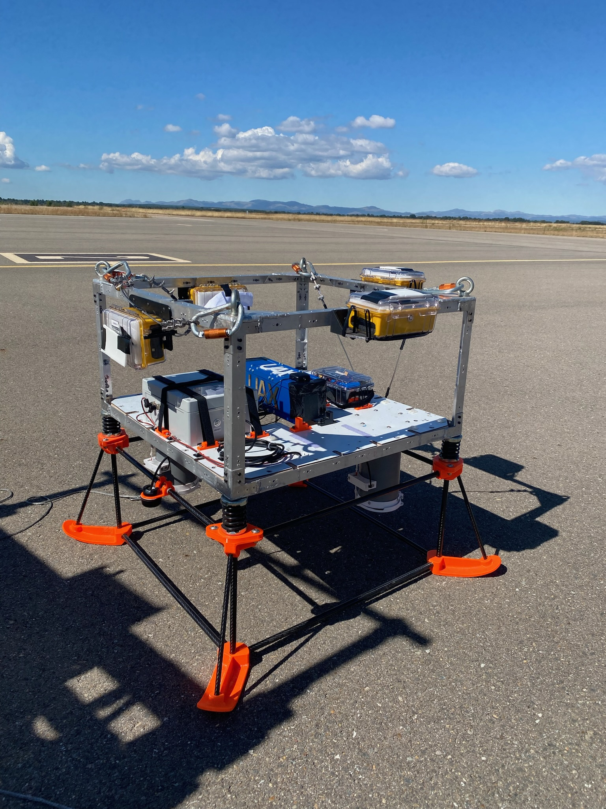
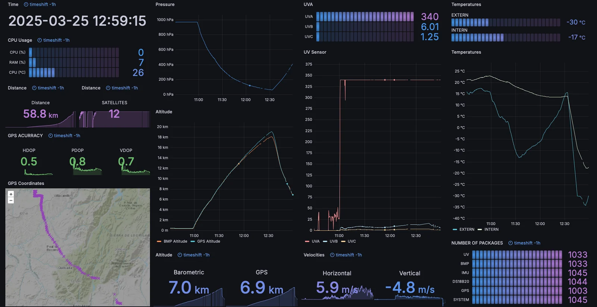

UAXSat IV — CubeSat Systems
I helped lead design and integration for a 3U student satellite, connecting its structure, composite materials, payload, telemetry, and ground data system.
Integrate a small satellite as a system
I worked on UAXSat IV, a student-led 3U CubeSat programme for stratospheric research and Earth observation. My engineering challenge went beyond the structure: the mechanical packaging had to support a payload while software, sensors, power, and communications worked as an integrated system.
I led team work and contributed to structural design, composite materials, additive manufacturing, CNC processes, communications and system integration.

Design around interfaces, mass, and manufacture
We developed a 3U structure using Kevlar–carbon laminate walls, PETG printed components, and metal profiles. I worked on the structural and integration context, where mounting points, material properties, manufacturing capability, and component interfaces all affect the design.
Our documented payload includes GPS, LoRa, temperature, pressure, UV, and inertial measurements, with a camera listed in the hardware overview. The onboard computer is a Raspberry Pi 4.
We mounted as hardware and sensors a GPS as a SparkFun NEO-M9N, the LoRa radio as an Ebyte E220 900T30D, the temperature sensor as a DS18B20, the pressure sensor as a BMP390, the IMU as an ICM-20948, and the UV sensor as an AS7331. The camera mounted is a GoPro Hero 11.
Structure, payload, and ground segment
Our project repository publishes structural CAD assemblies and individual hardware models. I summarise the documented communications path below; it is an explanatory diagram, not a flight dashboard or a claim that every link was flight-qualified.

We had Raspberry Pi 3B ground station connected to the Ebyte radio and a Yagi antenna for reception. On the ground, the project configuration stores telemetry in PostgreSQL and visualises it with Grafana. This communication system allowed us to collect and monitor sensor data from the satellite.
Structural CAD and project software are available in the hardware repository and software repository.
Documented system and limitations
The system documentation covers the sensor suite, communications stack, ground-station database, and Grafana dashboard configuration. It does not include quantitative flight-test results or a verified mission-performance report.
Integration is a design constraint
Working across structural and subsystem boundaries taught me to consider mounting points, access, wiring, sensor placement, and manufacturing sequence early, rather than leaving them to final assembly.
In another iteration, I would document interface ownership and verification criteria alongside the CAD so I could review each subsystem before hardware integration.
Next case study: UAS Drone Mission Planner →